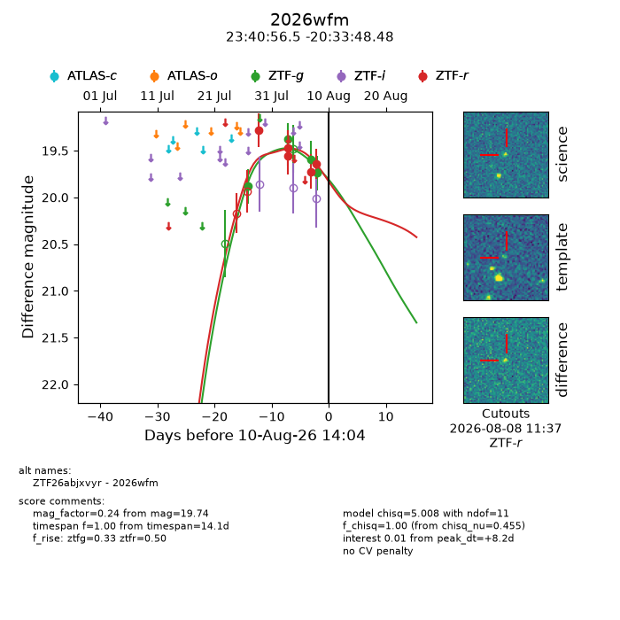
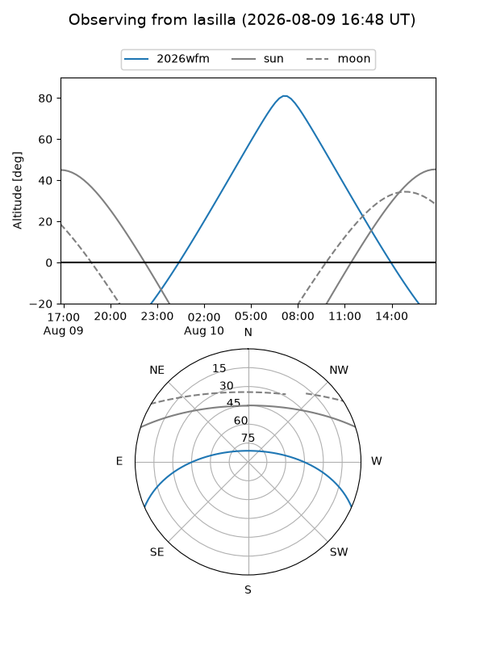
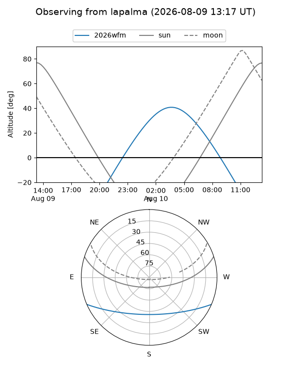
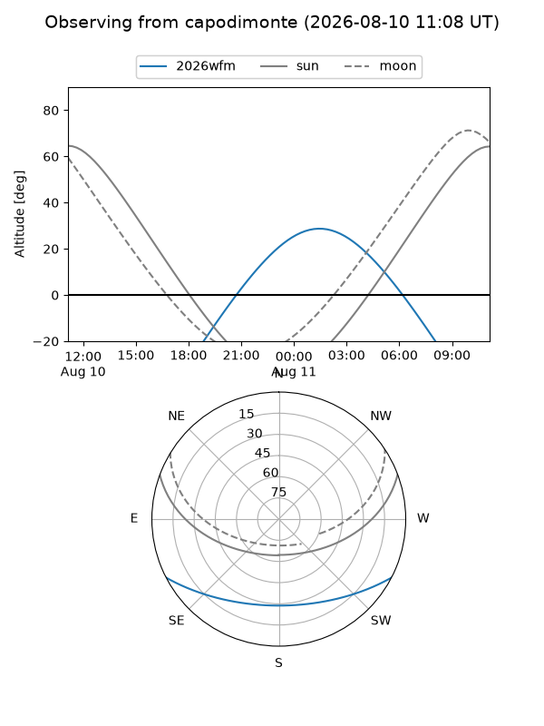
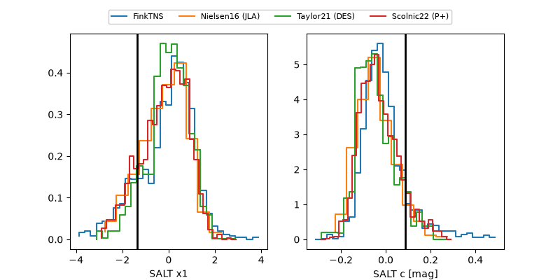

2026wfm
Target 2026wfm at 2026-08-10 14:07
Aliases and brokers:
FINK-ZTF: ztf.fink-portal.org/ZTF26abjxvyr
Lasair-ZTF: lasair-ztf.lsst.ac.uk/objects/ZTF26abjxvyr
ALeRCE-ZTF: alerce.online/object/ZTF26abjxvyr
YSE-PZ: ziggy.ucolick.org/yse/transient_detail/2026wfm
TNS name: wis-tns.org/object/2026wfm
Direct TNS query: direct search
alt names
ZTF26abjxvyr (ztf,fink_ztf)
2026wfm (tns,yse)
Coordinates:
equatorial (ra, dec) = 355.2353,-20.56347
equatorial (HMS+DMS) = 23:40:56.46,-20:33:48.48
galactic (l, b) = (51.3294,-72.61744)
Flags:
TNS type: nan
peak dt: +8.2
Photometry:
last ztfg=19.74, ztfr=19.64
4 ztfg, 5 ztfr detections
Lightcurve

Visibility



Additional plots
